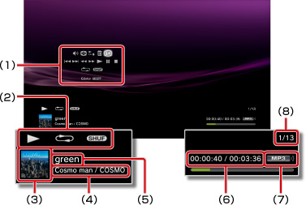

Müzik > Kontrol panelini kullanma
Kontrol panelini kullanma
Ekrandaki kontrol panelini kullanarak çeşitli işlemler gerçekleştirin. Kontrol paneli  düğmesine basılarak görüntülenebilir veya gizlenebilir.
düğmesine basılarak görüntülenebilir veya gizlenebilir.
Ses Kontrolü

 (Müzik) altında oynatılan içeriğin ses çıkış düzeyini ayarlayın. Dokuz düzeyden birini seçebilirsiniz.
(Müzik) altında oynatılan içeriğin ses çıkış düzeyini ayarlayın. Dokuz düzeyden birini seçebilirsiniz.
İpucu
Ses çıkış düzeyi çok yükseğe ayarlanırsa ses bozulabilir. Bu durumda, ses çıkış düzeyini alçaltın.
Görsel Oynatıcı
İçerik oynatma sırasında görüntülenecek birden fazla arkaplandan birini seçin.
İpucu
 (Fotoğraf) veya
(Fotoğraf) veya  (İnternet Tarayıcısı) içeriği görüntülendiğinde Görsel Oynatıcı arkaplanlarını değiştiremezsiniz.
(İnternet Tarayıcısı) içeriği görüntülendiğinde Görsel Oynatıcı arkaplanlarını değiştiremezsiniz.
Çalma Listesine Ekle
Bir oynatma listesine oynayan içeriği ekleyin.
İpucu
Yalnızca sistem depolama alanına kaydedilen müzik dosyaları oynatma listesine eklenebilir.
Sil
Oynatılmakta olan içeriği siler.
İpucu
Yalnızca sistem depolama alanına kaydedilen müzik dosyaları silinebilir.
Görüntüle
Oynatma sırasında durum ve diğer bilgileri görüntüler. Bilgi öğeleri oynatılmakta olan içeriğe göre değişir.

(1) |
Kontrol paneli |
|---|---|
(2) |
Durum simgesi |
(3) |
Parça simgesi |
(4) |
Sanatçı adı / albüm adı |
(5) |
Parça adı |
(6) |
Parçada geçen süre / toplam süre |
(7) |
Codec |
(8) |
Parça sayısı / toplam parça sayısı |
Önceki
Geçerli veya önceki parçanın başına dönün.
Sonraki
Sonraki parçanın başına dönün.
Hızlı Geri / Hızlı İleri
Oynatılmakta olan içeriği hızlı ileri veya hızlı geri alır.  düğmesini basılı tutarsanız, düğmeye bastığınız sürece içerik hızlı ileri veya hızlı geri alınır.
düğmesini basılı tutarsanız, düğmeye bastığınız sürece içerik hızlı ileri veya hızlı geri alınır.
Oynat
İçeriği oynatmaya başlayın.
Duraklat
Geçici olarak oynatmayı duraklatın.
Durdur
Oynatmayı durdurun.
Tekrarla
İçeriği tekrar tekrar oynatır. düğmesine basarak üç tekrarlama modundan birini seçebilirsiniz.
 |
Bir içerik öğesini tekrar tekrar oynatır. |
|---|---|
|
Tüm içeriği tekrar tekrar oynatır. |
| Görüntü yok | Tekrarlı çalmayı temizler ve tüm içeriği sırayla çalar. |
Karıştır
İçeriği rastgele sırada oynatır.